This follows on from “Correlations (1): Exploration of the differences between different correlation coefficients” and I do recommend that you go through that if you’re not confident about the existence of four main correlation coefficients. If you know all that, move on (but in that case you may know all this too!)
The sequence in which I’m taking things here is partly influenced by the history of these statistics in our fields (across my lifetime and about equally back before I could do simple algebra!) I am also drawing heavily from Wikipedia for bits that I think are perfectly adequately covered there (or covered way beyond what we need!) This is partly because I think the dominance of Null Hypothesis Significance Testing (NHST) in our quantitative research fields has been even more damaging when applied to correlation coefficients than it has generally. It certainly led me into doing things in earlier papers of mine that, though not frankly wrong, really weren’t ideal.
Null Hypothesis Significance Testing
For decades applied statistics in the mental health/psychology/therapy realms has been dominated by the NHST: Null Hypothesis Significance Testing paradigm (try my blog post about this if you want an introduction to that). That tests whether correlations as strong or stronger than the one you found in your data were unlikely to have occurred had you been sampling at random from a population in which there was no correlation between the variables. Until around the 1980s null hypothesis testing for the Pearson correlation was dominated by testing observed correlations from a sample against the null model in which both variables have a Gaussian distribution in the population (and a zero correlation there). This Gaussian model made it possible to have probabilities that could be computed even without electronic computer power and I grew up as a late teenager (so late 1970s) proud to own four figure and five figure books of “mathematical tables” that included tables of the critical Pearson correlations for a wide variety of sample sizes!
NHST and the Pearson correlation coefficient
This framework of assuming Gaussian populations underpinned a much wider realm than simply that of testing correlation coefficients from the early 20th century onwards and came to be known as “parametric statistics/testing” because much of the beauty of assuming Gaussian distributions is that they are completely defined by just two parameters: the mean and variance (or standard deviation). This led to the tendency to refer to the Pearson coefficient as a parametric correlation coefficient to align it with all the other parametric tests. To be fair, the standardisation of the raw variables involved in the calculation of the Pearson coefficient does use the mean and SD but doesn’t involve any assumptions that they of Gaussian distributions. There are actually a variety of ways of creating a statistical test of a Pearson coefficient see from here in the excellent Wikipedia article about the Pearson coefficient for the (very) gory details.
Fisher transformation of correlation coefficients
That sequence in the Wikipedia article ends with an approach involving the Fisher transformation of the Pearson coefficient.
The tests often used a “Fisher transformation” of the observed coefficient (r):
\[ F(r) = \frac{1}{2}\text{ln}\frac{1+r}{1-r} \]
Where “ln” indicates the nature logarithm, here of \(\frac{1+r}{1-r}\). This transform turns a variable bounded by -1 and +1 into one bounded by \(-\infty\) and \(+\infty\) (and zero remains zero). Here’s a set of transformations from
Show code
r | Fisher |
|---|---|
-1.000 | -Inf |
-0.999 | -3.800 |
-0.990 | -2.647 |
-0.950 | -1.832 |
-0.900 | -1.472 |
-0.900 | -1.472 |
-0.700 | -0.867 |
-0.500 | -0.549 |
-0.300 | -0.310 |
-0.100 | -0.100 |
0.200 | 0.203 |
0.400 | 0.424 |
0.600 | 0.693 |
0.800 | 1.099 |
0.900 | 1.472 |
0.950 | 1.832 |
0.990 | 2.647 |
0.999 | 3.800 |
1.000 | Inf |
And here’s a plot of the relationship.
Show code
tibble(r = seq(-.99, .99, .01)) %>%
arrange(r) %>% # get in order as I was lazy above!
mutate(Fisher = psychometric::r2z(r)) -> tmpTib
ggplot(data = tmpTib,
aes(x = r, y = Fisher)) +
geom_line() +
geom_hline(yintercept = 0,
linetype = 3) +
geom_vline(xintercept = 0,
linetype = 3) +
ylab("F(r)") +
ggtitle("Plot of Fisher transform of r against r")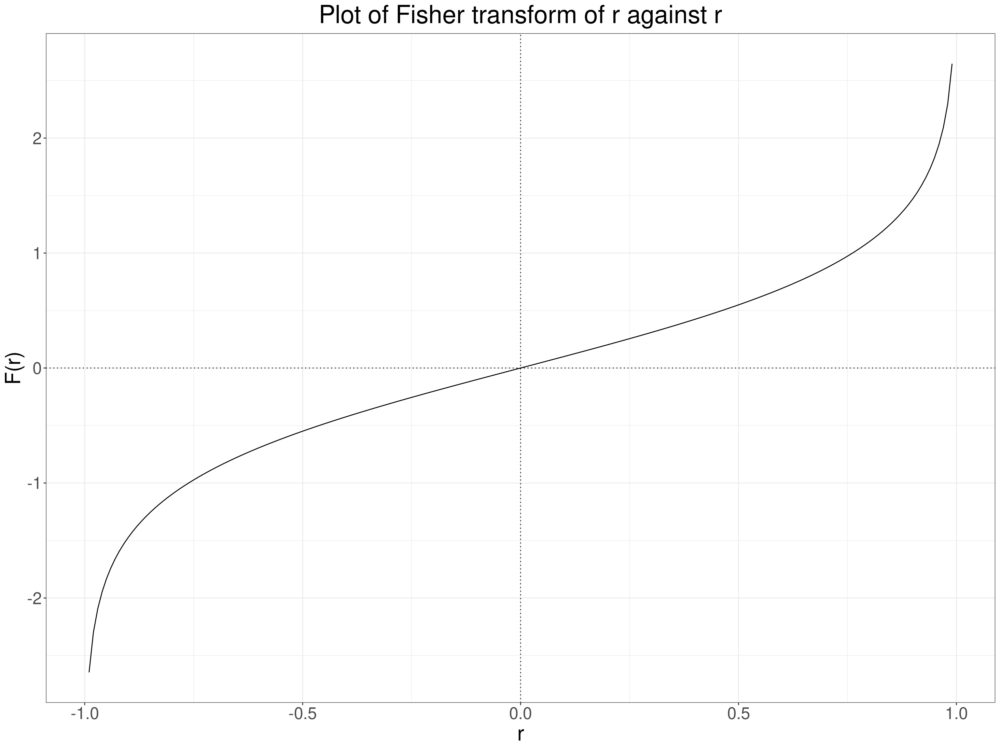
NHST and the Spearman correlation coefficient
Statistical theory gives two ways of testing Spearman correlation coefficients against the assumption of zero rank correlation. The Wikipedia entry gives the two simple equations but no theory about why they work.
NHST and the Kendall correlation coefficients
Yet again I’m drawing on Wikiopedia for this but this entry gives a (messy!) formula that gives a way of testing a Kendal tau b with a reference but gives no formula for Kendall’s tau c and, though tau b and tau c will be identical across monotonic transformations of raw data they can be different for different reduction in numbers of possible values (see here in my earlier correlation coefficients (1) post) so I suspect one can’t use this approach to get a reliable p value for a Kendall tau c. As I’m not convinced NHST for correlation coefficients is a great methodology I won’t drill into that nor (at least currently) provide online apps for any of these p values.
Why not use NHST?
There are many general arguments why overvaluation of the NHST has been harmful, the American Statistical Association statement (Wasserstein, R. L., & Lazar, N. A. (2016). The ASA’s statement on p-values: Context, process, and purpose. The American Statistician, 70(2), 129–133. https://doi.org/10.1080/00031305.2016.1154108) is a meaty read but covers the issues extensively and I think that generally the circumstances in which doing an NHST is all we need, useful and not potentially misleading are fairly few. However, I think this is particularly true when applied to testing correlations.
Why? Well there are circumstances in which I can see that testing for a correlation that was unlikely to have arisen by chance, given our sample size and observed correlation coeffient, may be useful. One example might be to see whether some ordered variable, perhaps age, local demographic deprivation, size of service might or might not correlate with something we care about: referral rates, waiting times, baseline scores on measures. If we have some independence of observations and some reasonable argument that we can generalise from our sampling frame (or the non-sample based routine data!) then finding that a correlation could very easily have arisen by chance is useful to suggest that we can ignore that possible relationship … but only if we have large enough samples to have given us strong statistical power. So far so ordinary: confidence intervals would be more informative (see next section!) but what’s special about correlation here?
The main thing for me is that there’s a danger that people will do the test on the correlation coefficient and not think what the coeffient is testing: if it’s a Pearson correlation there are many non-linear relationships between two variables that are far from random but give near zero correlations. See these:
 (from https://commons.wikimedia.org/wiki/File:Correlation_examples2.svg).
(from https://commons.wikimedia.org/wiki/File:Correlation_examples2.svg).
{kind=link}
Clearly anyone can get around this by making sure that they inspect the scattergram. This is a simulated example (but not 100% implausible) of a general population sample plotting CORE-OM scores against age.
Show code
set.seed(12345)
nTot <- 1000
tibble(x = runif(nTot, -10, 10)) %>%
mutate(y = .15 * (20 - x^2) + rnorm(nTot, sd = 15),
y = 120 + y,
x = 2 * x + 38 + rnorm(nTot),
y = (y - 56) / 30) %>%
filter(x >= 18) -> tmpTib
tmpTib %>%
summarise(minX = min(x),
maxX = max(x),
minY = min(y),
maxY = max(y),
meanY = mean(y)) -> tmpStats
cor(tmpTib$x, tmpTib$y) -> tmpVarCorR
cor.test(tmpTib$x, tmpTib$y)$p.value -> tmpVarCorRP
ggplot(data = tmpTib,
aes(x = x, y = y)) +
geom_point(alpha = .5) +
geom_smooth() +
geom_smooth(method = "lm",
colour = "red") +
geom_hline(yintercept = tmpStats$meanY,
linetype = 3) +
scale_x_continuous("Age",
breaks = c(18, seq(20, 60, 5))) +
scale_y_continuous("CORE-OM score",
breaks = seq(0, 4, .5)) +
ggtitle("Plot of CORE-OM score against age, n = 1,000",
subtitle = paste0("Dotted line marks mean y value, red line is best fit linear regression",
"\nblue line is LOESS smoothed regression, both with 95% CIs"))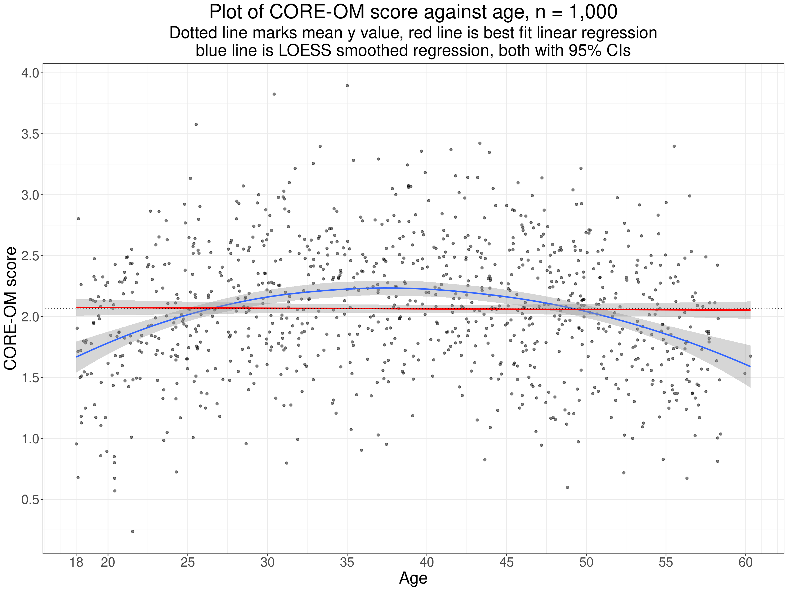
This illustrates one useful way to check for potentially systematic, i.e. potentially “statistically significant” relationships used here is to plot the smoothed regression line, here in blue. Certainly this one is suspiciously nicely quadratic but the principal of checking that its confidence limits clearly do not include the linear regression (nor the mean y score). The Pearson correlation here is -0.01 with parametric assumptions p value 0.73 but the basic issue is that testing an observed Pearson correlation against the null model probably only really makes sense and sits in true “no first looking” NHST paradigm if we can be sure that it’s only a linear relationship that we’re interested to find. If we can relax that to the more flexible idea that we’re only interested in finding some weakly monotonic relationship then testing the Spearman or either Kendall tau make sense.
However, the NHST is more generally unhelpful for correlations as so often we know the null model is so totally implausible and uninteresting that testing it is a diversion from the question of interest, this applies particularly for psychometric correlations. If we are exploring convergent validity correlations we want to see strong positive correlations and, depending on the exact question of interest, probably interested in correlations of over .6 where asking “is there the level of agreement that would expect given the theoretical similarities in the foci of these two related measures?” or looking for correlations over .9, perhaps over .95 if asking “are these potentially interchangeable measures?”. It might seem that NHST would be useful when testing divergent validity but even here the reality that often the “divergent” measure, say age, highest level of education, while we hope not showing very strong relationships to our main measure often can be expected to show some systematic if weak relationship. Here again the NHST is less useful than a scattergram with smoothed regression.
Estimation and CIs around correlation coefficients
For convergent validity correlations, as noted above, we are interested in just how strong the correlation is and probably in the distributions of the values on each measure and we should certainly look at the scattergram and smoothed regression curve. Assuming the scattergram suggests that a linear or monotonic correlation looks plausible what we really would like to know is how precisely our observed correlation may have estimated the population correlation given our sample size (and some assumptions about the sampling framework). This is where the confidence interval is so useful (and where Bayesian methods can kick in but I’m not yet a confident Bayesian!) This takes back to distributions and those parametric methods.
Distributions of values and estimating correlation CIs
As noted above there are strong statistical models that enable us to use the NHST approach with correlations but dependent on the generally implausible assumption that the population distributions of both variables are Gaussian. Gaussian models can also be used to get confidence intervals for the Pearson and Spearman coefficients, the latter through the Fisher transformation. However, if you have the raw data there is a pretty overwhelming argument that with modern statistical software (particularly R!) you no longer need parametric approaches for confidence intervals (and, by extension, should you insist on doing NHSTs). This is because they can give quite misleading CIs (and p values) where data are not Gaussian in distribution, issues not mitigated by large sample sizes (see e.g. Bishara, A. J., & Hittner, J. B. (2017). Confidence intervals for correlations when data are not normal. Behavior Research Methods, 49(1), 294–309. https://doi.org/10.3758/s13428-016-0702-8). This is also because typical computational power in modern personal computers allows the use of “computer intensive” methods, either the jackknife or, more commonly and probably more robustly, the bootstrap. These methods can be used for any of the correlation coefficients and are not vulnerable to any of the likely distributions we will get.
Jackknifing to get CIs around correlations
The jackknife is simple and works by recomputing the correlation coefficient for any sample of size n but each time leaving out one of the observed pairs of values. The simple percentile method for the CI, say the 95% CI, then works by taking as the confidence limits the 2.% and 97.5% quantiles of the coefficients. Here’s an example to give you an idea of the method. This is a sample of n = 1,000 of simulated sampling from a Gaussian population for the x variable and a deliberately transformed y variable so it does not fit the Gaussian distribution.
Show code
nTot <- 1000
set.seed(12345)
popCorr <- .7
# tibble(ID = 1:nTot) %>%
# # rowwise() %>%
# # mutate(tmp = list(
sim_covar(n_obs = nTot, n_vars = 2, var = 1, cov = popCorr) %>%
mutate(V1 = V1 + 5, # get rid of negative values
V2 = V2 + 5,
x = V1,
### mucky transform!
y = V2 + .3 * V2^2.4 + rnorm(nTot, sd = .3)) -> tmpTib
ggplot(data = tmpTib,
aes(x = x, y = y)) +
geom_point(alpha = .5) +
geom_smooth(fill = "dodgerblue3") +
geom_smooth(method = "lm",
colour = "red",
fill = "deeppink3")
Show code
cor.test(tmpTib$x, tmpTib$y) -> tmpListCorrP
tmpListCorrP$estimate -> tmpValCorr
tmpListCorrP$conf.int[1:2] -> tmpVecCICorrPThis is clearly not a simple linear relationship, here’s the “SPLOM” (ScatterPLOt Matrix) which gives us the distributions as well as a simple scattergram.
That shows a decided positive skew on the y variable though it looks as if the x variable could be Gaussian. Check the x variable: first superimposing the Gaussian with the same mean and SD as the empirical data. This is very understandable as a test of fit but not a very strong one as we’re just not very good at visually assessing such a fit.
Show code
tibble(x = seq(min(tmpTib$x), max(tmpTib$x), length = 500),
y = dnorm(x, mean = mean(tmpTib$x), sd = sd(tmpTib$x))) -> tibDnorm
ggplot(data = tmpTib,
aes(x = x)) +
geom_histogram(aes(x = x,
after_stat(density)),
bins = 50,
alpha = .6) +
geom_line(data = tibDnorm,
inherit.aes = FALSE,
colour = "green",
linewidth = 2,
aes(x = x, y = y)) +
geom_vline(xintercept = mean(tmpTib$x)) 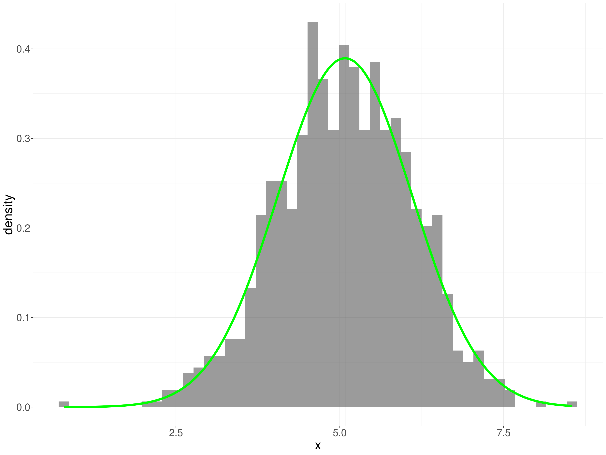
This, the ECDF is a better test for us to eyeball as we’re better at eyeballing monotonic curves.
Show code
tibble(x = seq(min(tmpTib$x), max(tmpTib$x), length = 500),
y = pnorm(x, mean = mean(tmpTib$x), sd = sd(tmpTib$x))) -> tibPnorm
ggplot(data = tmpTib,
aes(x = x)) +
geom_point(data = tibPnorm,
aes(x = x, y = y),
colour = "green") +
stat_ecdf() +
ylab("Proportion") +
ggtitle("Empirical cumulative distribution (ECDF) of x values",
subtitle = paste0("ECDF maps cumulative proportion of scores below x value to the x values",
"\nGreen line is Gaussian ecdf for observed mean and SD"))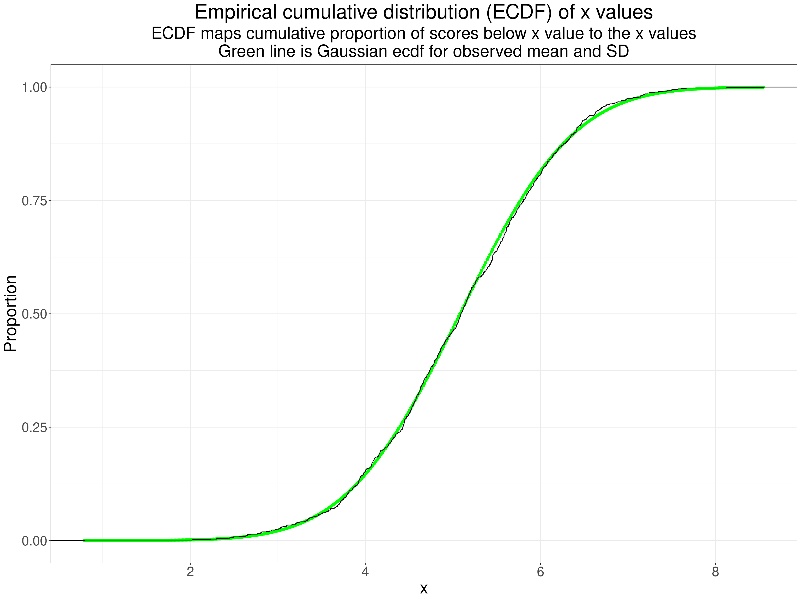
Finally a qqplot as we are best at eyeballing straight lines!
Show code
ggplot(data = tmpTib,
aes(sample = x)) +
stat_qq() +
stat_qq_line() +
ylab(paste0("Observed values for same quantile",
"\nas for perfect Gaussian score (x-axis)")) +
xlab(paste0("Values for the true Gaussian distribution",
"\nfor same quantile as for observed point on y-axis")) +
ggtitle("A qq plot of the x values")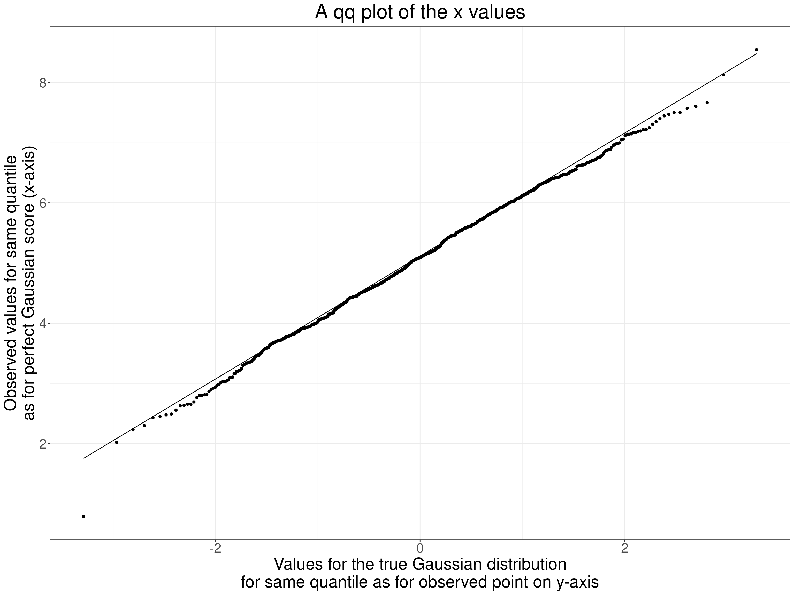
Now the same plots for the y values.
Show code
tibble(x = seq(min(tmpTib$y), max(tmpTib$y), length = 500),
y = dnorm(x, mean = mean(tmpTib$y), sd = sd(tmpTib$y))) -> tibDnorm
ggplot(data = tmpTib,
aes(x = y)) +
geom_histogram(aes(x = y,
after_stat(density)),
bins = 50,
alpha = .6) +
geom_line(data = tibDnorm,
inherit.aes = FALSE,
colour = "green",
linewidth = 2,
aes(x = x, y = y)) +
geom_vline(xintercept = mean(tmpTib$y)) 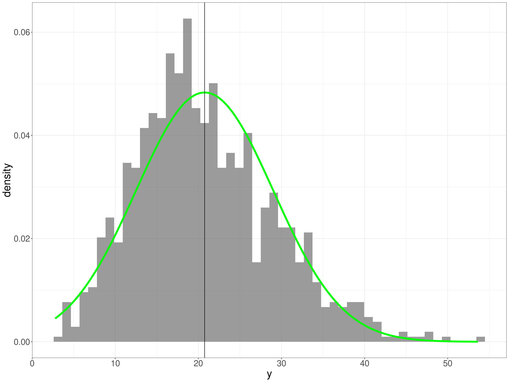
That’s pretty clearly positively skew. What about the ECDF?
Show code
tibble(x = seq(min(tmpTib$y), max(tmpTib$y), length = 500),
y = pnorm(x, mean = mean(tmpTib$y), sd = sd(tmpTib$y))) -> tibPnorm
ggplot(data = tmpTib,
aes(x = y)) +
geom_point(data = tibPnorm,
aes(x = x, y = y),
colour = "green") +
stat_ecdf() +
ylab("Proportion") +
ggtitle("Empirical cumulative distribution (ECDF) of y values",
subtitle = paste0("ECDF maps cumulative proportion of scores below y value to the actual y values",
"\nGreen line is Gaussian ecdf for observed mean and SD"))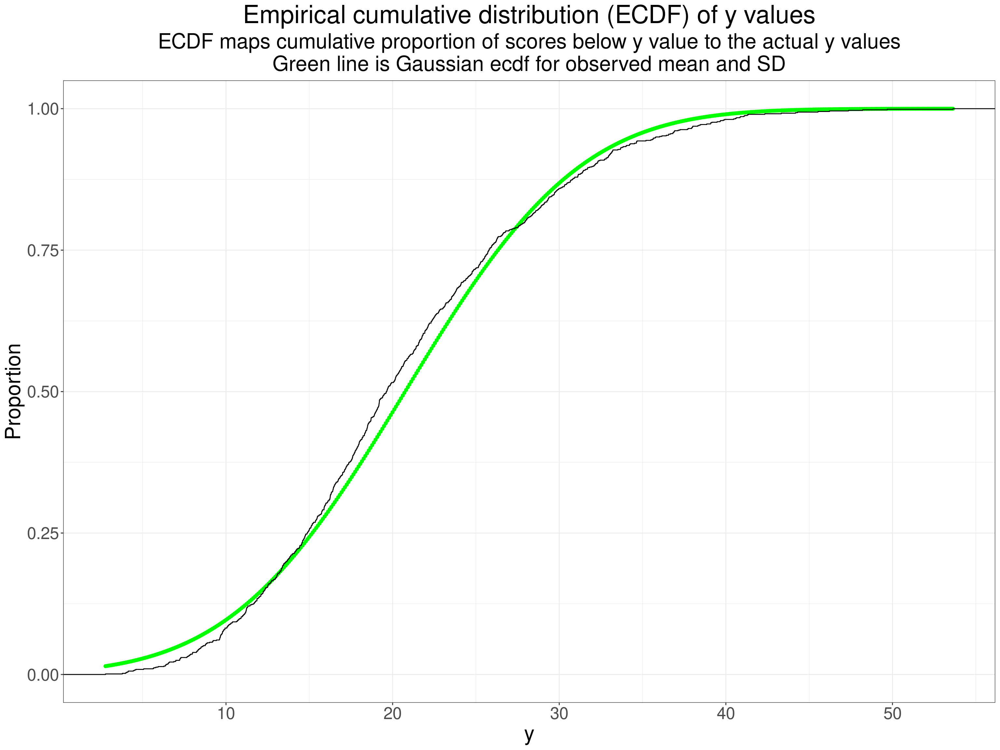
Perhaps not as obvious as you might expect from the histogram but the systematic crossing of the empirical ecdf across the ecdf for the best fitting Gaussian distribution is clear. Finally a qqplot.
Show code
ggplot(data = tmpTib,
aes(sample = y)) +
stat_qq() +
stat_qq_line() +
ylab(paste0("Observed values for same quantile",
"\nas for perfect Gaussian score (x-axis)")) +
xlab(paste0("Values for the true Gaussian distribution",
"\nfor same quantile as for observed point on y-axis")) +
ggtitle("A qq plot of the y values")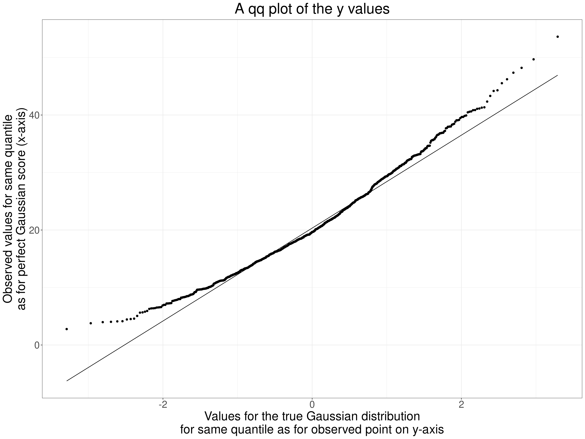
That’s a typically concave to the top left qqplot for a positively skew distribution. OK, so our parametric p value and 95% CI might be misleading. However, this is really just to show how the jackknife works. Here are the first ten pairs of values.
Show code
tmpTib %>%
filter(row_number() < 11) %>%
flextable() %>%
colformat_double(digits = 3)V1 | V2 | x | y |
|---|---|---|---|
4.089 | 4.681 | 4.089 | 16.970 |
5.164 | 5.322 | 5.164 | 21.612 |
4.158 | 5.602 | 4.158 | 24.487 |
4.451 | 3.786 | 4.451 | 11.211 |
4.741 | 4.629 | 4.741 | 16.719 |
4.470 | 4.665 | 4.470 | 16.402 |
4.586 | 5.797 | 4.586 | 25.409 |
6.539 | 7.104 | 6.539 | 40.572 |
6.251 | 6.365 | 6.251 | 31.315 |
7.349 | 7.036 | 7.349 | 39.654 |
Show code
tmpListCorrP$conf.int[1:2] -> tmpVecCICorrPThe Pearson coefficient was 0.703 and the parametric 95% CI is from 0.6699 to 0.7328. To get the jackknife CI we get the Pearson coefficients dropping one pair of observations at at time. Here are those correlations.
Show code
tmpTib %>%
select(x, y) %>%
mutate(obsN = row_number()) -> tmpTib2
tibble(jackknifeN = 1:nrow(tmpTib2)) %>%
mutate(dat = list(tmpTib2)) %>%
unnest(dat) %>%
filter(jackknifeN != obsN) %>%
group_by(jackknifeN) %>%
summarise(cor = cor(x, y)) -> tibJackknife
tibJackknife %>%
filter(jackknifeN < 11) %>%
flextable() %>%
colformat_double(digits = 4)jackknifeN | cor |
|---|---|
1 | 0.7027 |
2 | 0.7027 |
3 | 0.7035 |
4 | 0.7026 |
5 | 0.7027 |
6 | 0.7027 |
7 | 0.7032 |
8 | 0.7021 |
9 | 0.7023 |
10 | 0.7012 |
That shows that the coefficients vary a little as each one is calculated from 999 instead of 1,000 observed pairs removing each observed pair sequentially. The distribution of the jackknife iteration correlations looks like this.
Show code
tibJackknife %>%
summarise(min = min(cor),
max = max(cor),
mean = mean(cor)) -> tibJackknifeSummary
tibJackknifeSummary %>%
pivot_longer(cols = everything()) -> tibJackknifeSummaryLong
ggplot(data = tibJackknife,
aes(x = cor)) +
geom_histogram(alpha = .5) +
geom_segment(x = tibJackknifeSummary$mean,
xend = tibJackknifeSummary$mean,
y = 0, yend = Inf,
colour = "red") +
# geom_segment(x = tibJackknifeSummary$q025,
# xend = tibJackknifeSummary$q025,
# y = 0, yend = Inf,
# colour = "green") +
# geom_segment(x = tibJackknifeSummary$q975,
# xend = tibJackknifeSummary$q975,
# y = 0, yend = Inf,
# colour = "green") +
# geom_segment(data = tibJackknifeSummary,
# inherit.aes = FALSE,
# aes(x = q025, xend = q975, y = 200, yend = 200),
# linewidth = 2,
# colour = "green",
# arrow = arrow(ends = "both")) +
xlab("Jackknife Pearson correlations") +
ylab("n") +
ggtitle("Histogram of jackknifed Pearson correlations",
subtitle = paste0("Vertical lines mark mean (red) and 2.5% and 97.5% percentiles",
"\nHorizontal arrow is 95% jackknife CI"))The jackknife resamples had correlations ranging from 0.7 to 0.7055 with mean 0.7027. (The raw correlation was 0.7027 showing little or now bias in the jackknifing.) The jackknife CI is obtained from the standard error of these resampled correlations and th e 95% CI was 0.6725 to 0.733: close to the parametric CI but not quite identical.
Bootstrapping to get CIs around correlations
Jackknifing is fairly simple to understand but has been largely replaced by another computer intensive method: bootstrapping. This again uses multiple reanalyses of data from the sample but instead of using “leave out one” method of “resampling” the data a bootstrap resample of the same size as the original sample is formed of a random set of the data taken with replacement (obviously). This means that any of the observed data pairs can be in the resampled data zero, one, two or more times.
So given our sample size of 1,000 a random bootstrap might find the following original ten rows of data occurring most frequently
Show code
set.seed(12345)
tibble(id = sample(1:nrow(tmpTib), replace = TRUE)) %>%
count(id) %>%
arrange(desc(n), id) -> tmpTibBoot
tmpTibBoot %>%
filter(row_number() == 1) %>%
select(id) %>%
pull() -> tmpID1
tmpTibBoot %>%
filter(n == 5) %>%
select(id) %>%
filter(row_number() > 1) %>%
pull() %>%
convertVectorToSentence() -> tmpTopIDs
tmpTibBoot %>%
filter(row_number() < 11) %>%
flextable()id | n |
|---|---|
86 | 5 |
232 | 5 |
571 | 5 |
903 | 5 |
57 | 4 |
62 | 4 |
148 | 4 |
215 | 4 |
229 | 4 |
257 | 4 |
So the bootstrap resample contains the 86th original data pair, which happened to be:
r occurred five times in the resampled data as did rows 232, 571 and 903. In all 346 observations were not selected into this bootstrap resample from the data. Bootstrapping gives the percentile bootstrap 95% CI from
0.6734 to
0.6734.
Summarising robust CIs for correlations
The three different methods of getting the 95% CIs gave us this (to silly precision for demonstration purposes!)
Show code
bind_rows(c("LCL" = tmpVecCICorrP[1], "UCL" = tmpVecCICorrP[2]),
tmpJackCIcorr,
# c("LCL" = as.numeric(tibJackknifeSummary$q025), "UCL" = as.numeric(tibJackknifeSummary$q975)),
c("LCL" = as.numeric(tmpBootCI[1]), "UCL" = as.numeric(tmpBootCI[2]))) %>%
mutate(Method = c("Parametric", "Jackknife", "Bootstrap")) %>%
select(Method, LCL, UCL) %>%
flextable() %>%
colformat_double(digits = 4)Method | LCL | UCL |
|---|---|---|
Parametric | 0.6699 | 0.7328 |
Jackknife | 0.6725 | 0.7330 |
Bootstrap | 0.6734 | 0.7319 |
This has all really been explanatory and my example, with clearly significant but not very extreme deviation from Gaussian on just the one variable hasn’t shown very marked differences between the methods but there is no real doubt now that if you have the raw data the only sensible option is to use the bootstrap to get a CI that doesn’t involve distributional assumptions. There is some argument that with a dataset size below 40 the bootstrap may be unreliable but probably no more so than accepting the parametric CI. (I have not found simulations explicitly addressing that but Bishara, A. J., & Hittner, J. B. (2017). Confidence intervals for correlations when data are not normal. Behavior Research Methods, 49(1), 294–309. https://doi.org/10.3758/s13428-016-0702-8 used simulated samples down to n = 10 but don’t explicitly address behaviour at that n. However, the paper is extremely thorough and I think we can read from that that the problems with such small samples are not severe.)
Robust NHST for correlations
If you really do have a situation in which a testing the null for a correlation makes sense and you have the raw data then the corollary of this last section about computer intensive methods to bypass distributional assumptions is that you should use them rather than the parametric test. For jackknifing this is about seeing if the 2.5% percentile of the jackknifed sample correlations is greater than zero (or less than zero if your raw data correlation is negative). In the example above the smallest of the 1,000 jackknife samples the 2.5% percentile was .67 so we can safely say the sample correlation is such that we can reject the null hypothesis at .05 (and at much smaller pre-chosen alpha values!) Exactly the same logic applies with bootstrapping so as we saw the 2.5% percentile of the bootstrap resample correlations was .67 we can again reject the null.
What if you don’t have the raw data?
Quite often I want to compare a correlation coefficient from some new data with published correlations from published work. Generally I will only have access to the observed correlation and the dataset size. In this situation we have no alternative but to use the parametric formula to find the CI we want around a reported Pearson correlation and an equation for the Spearman correlation exists. I have put apps to do this in my collection of shiny utilities: https://shiny.psyctc.org/. The Pearso.n one is here and the Spearman one here.
Conclusion
This brings me right back to the key question “what are we trying to with correlation coefficients?” Having worked through these two Rblog posts I am increasingly clear that that is the foundation from which to chose a coefficient and how to use it. Here is my methodological position on this.
The first key issue here is whether your questions are in the “this is a one off to reject or accept the null here and now” of the classical NHST framework. If so you may have a situation in which the null hypothesis really is of interest and then your remaining question is about how you see the level of measurement in the data. If you have count data or “hard” test results like weight, blood test concentrations you are probably pretty safe to assume that your data have the interval level of measurement and should use the Pearson correlation. However, there is still a caveat: some clearly interval level measures address latent issues that may not be linear functions of the values. A trite example from the natural sciences world is that acidity measured as pH is a interval measurement but it happens to be the negative log (to base 10) of the concentration of free hydrogen ions in a liquid, if we wanted that concentration we would be interested not in pH but in \(10^{pH}\) a very non-linear function of pH.
Show code
tibble(pH = seq(6, 8, .05)) %>%
mutate(concHions = 10^pH) -> tmpTib
ggplot(data = tmpTib,
aes(x = pH, y = concHions)) +
geom_line() +
# scale_y_continuous(labels = ~ format(.x, scientific = FALSE)) +
scale_y_continuous("Concentration of free H ions (per litre)",
labels = scales::comma) +
ggtitle("Plot of concentration of H+ ions against pH")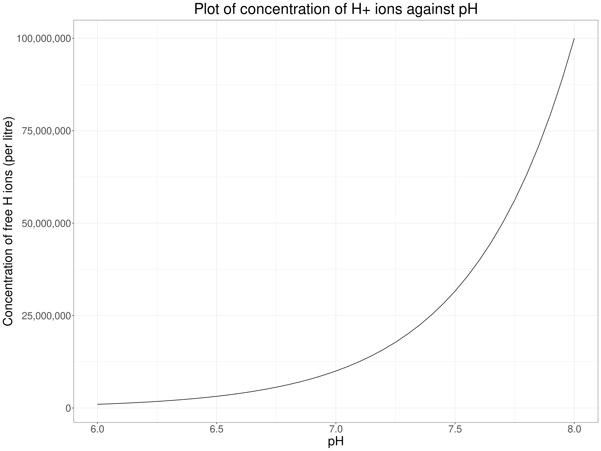
Here the relationship is clearly non-linear so if we wanted to know how strongly, or whether, the concentration of free hydrogen ions correlated with something else we could use a rank correlation … but as the measurement level is high if non-linear, and as we know the non-linear relationship, what we would actually do is to correlate something else against the transformed pH levels using the \(10^{pH}\) transform.
Getting a bit more psychological decibels (dB) are used to measure the sound levels and it is another logarithmic scale: for our purposes the energy of a sound level of 30dB is 10 times that of a sound level of 20dB and a level of 40dB is 100 times that of 20db. Our perception of sound levels is roughly logarithmic. The same is true of light intensities and some other perceptual levels: the Weber-Fechner Law (ooh, this takes me way back to 3rd year university and doing some psychology!) So if we had people’s ratings of sound level in relation to different powers of amplifier playing them the same sounds (in the same setting and distance from the speakers!) we might see another non-linear relationship.
Show code
tibble(W = 10:80) %>%
mutate(Loudness = log(W, base = 10)) -> tmpTib
ggplot(data = tmpTib,
aes(x = W, y = Loudness)) +
geom_line() +
# scale_y_continuous(labels = ~ format(.x, scientific = FALSE)) +
scale_y_continuous("Loudness",
labels = scales::comma) +
ggtitle("Loudness against amplifier power (very fictional!)")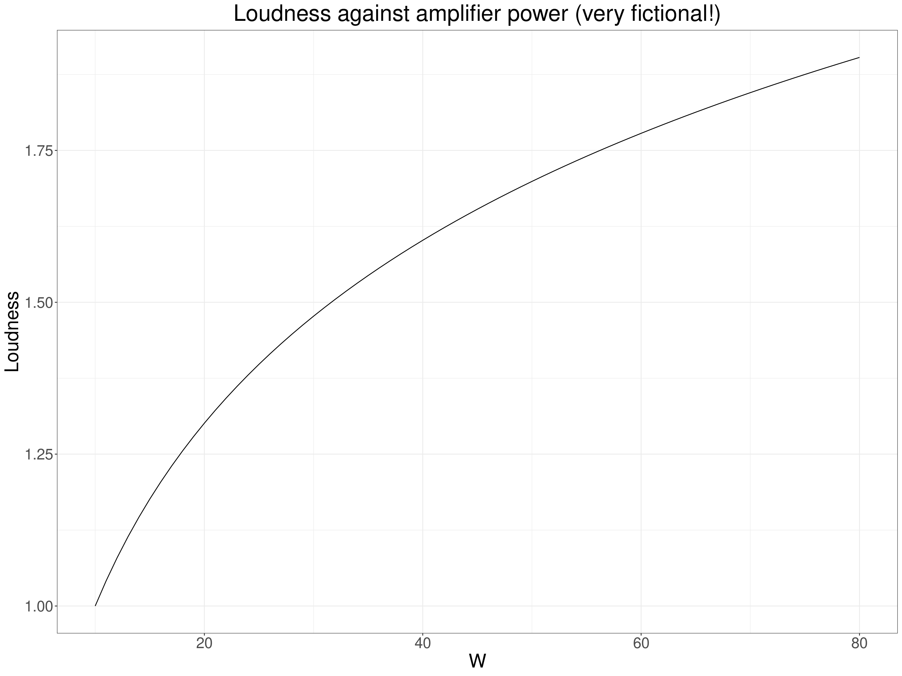
So here again we expect a non-linear but monotonic relationship and would be best using the Pearson correlation but not against the power of the amplifiers but against the logarithm of that power. That “linearises” the relationship and though rank correlation coefficients would be telling us that the rank correlation was highly unlikely to be zero (given sufficient range of amplifier power) the Pearson would be telling us something more definite about the linearised relationship between power and loudness.
Show code
tibble(W = 10:80) %>%
mutate(Loudness = log(W, base = 10),
logW = log(W, base = 10)) -> tmpTib
ggplot(data = tmpTib,
aes(x = logW, y = Loudness)) +
geom_line() +
# scale_y_continuous(labels = ~ format(.x, scientific = FALSE)) +
scale_y_continuous("Loudness",
labels = scales::comma) +
ggtitle("Loudness against amplifier power (very fictional!)")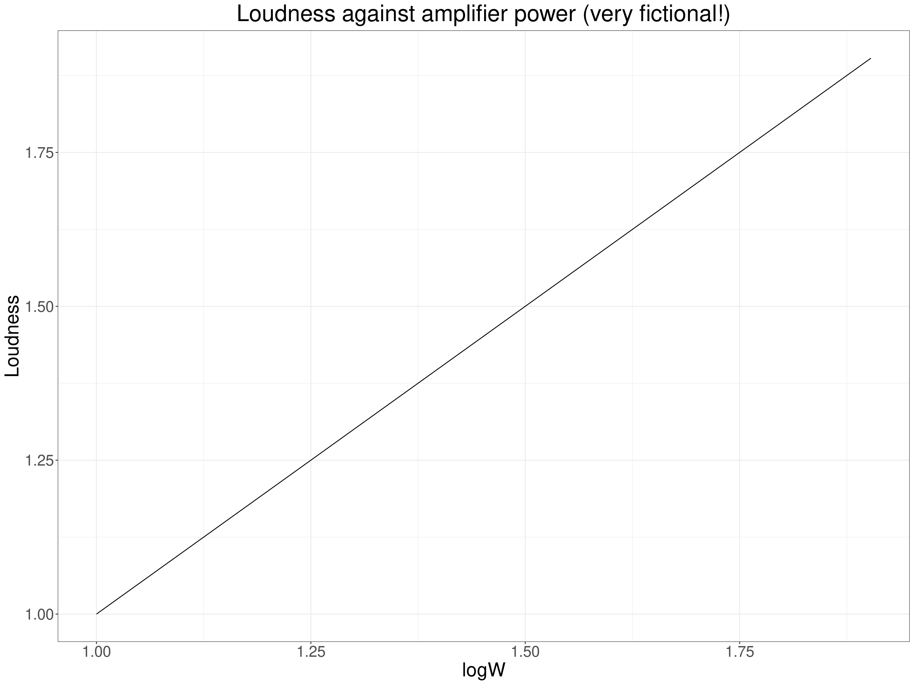
Of course in the MH and therapy realms having such knowledge about mathematical relationships of our measurments against other quantities is a seductive delusion of the “precision MH/therapy” worlds: we simply don’t have the levels of measurement nor do we have models that convincingly generalise across all of us. (In my view!) This may be true even for some of our more seemingly interval level measures. Age is my favourite example: if we have today’s date and someone’s data of birth we appear to have that person’s age today to the nearest day and that seems to give us a variable that clearly has interval measurement and is the same for everyone. But is it? Not only do physical and psychological changes across the lifespan happen at very different rates at different ages (with complex and surely non-binary differences by gender through adolescence) but even in adulthood the same age can mean very different things to different people and map very differently to say, income, housing security, intimate relationships, caring responsibilities. Beware apparent linearities!
It is certainly possible to argue, as Stevens did, that most of, perhaps all of, our change measures don’t have interval measurement properties so that we should only ever use rank correlation coefficients with them. Before tackling that, let’s look at the other foundational question about the methodological, almost epistemological position we come from when wanting to look at a correlation.
If we are not in the “one off” NHST paradigm I argue that we are in the process of contributing to a “nomological network” to use the wonderful phrase of Cronbach and Meehl (Cronbach, L. J., & Meehl, P. E. (1955). Construct validity in psychological tests. Psychological Bulletin, 52, 281–302). At one extreme this nomological network building is perhaps most obvious in a largely qualitative psychotherapy case series that uses change measures and maps change against session number alongside the qualitative data and builds those into a narrative (i.e. a story in the report, not necessarily formal qualitative narrative analysis). At the other extreme this might be in a meta-analysis perhaps looking at the correlations between different change measures. (Playing with words again, this might or might not be a formal network meta-analysis!) These are paradigmatic examples of building networks understanding by mapping across many sources of data. In between, probably, is most published literature on MH and therapy: very little is “one off”, standalone, “proof” of something, almost everything is contributing to a pool of work, a network.
If we are in this methodological arena then generally NHSTs of correlations are not helpful and we are contributing correlations between variables and the information that is useful is the strength of the correlation and what sort of precision of estimation we think our observed correlation and our dataset size give us (always with the usual sensible caveats about how the dataset was built: the “sampling frame” and setting information). In that situation we will want to put confidence intervals around our observed correlations but we still need to choose an appropriate coefficient given our beliefs about the measurement properties. However, we will also often find that the existing data, the nomological network to which we want to add our new findings, is mostly reported using the Pearson correlation even though we think a rank correlation coefficient might be more appropriate, or vice versa: a rank correlation coefficient, probably Spearman’s, has been used before on the logic that the data were rank data or that the distributions looked highly unlikely to have come from Gaussian population data (both actually weak arguments!) In this situation I try to give both a Pearson correlation with a bootstrap 95% CI (unless the Pearson has never been used before or, perhaps, if I think it’s obviously going to be very misleading as with very short ordinal ratings) and I will usually add a rank correlation coefficient appropriate to the scaling, probably with bootstrap 95% CI. (I haven’t seen clear analyses of bootstrapping or even of CIs for Kendall’s coefficients and as they involve looking at all the data pairs against all the other (distinct) data pairs contributing to the coefficient their computational demands are proportional to \(n^2\) not to \(n\) so could become quite severe if combined bootstrapping. Watch that space!)
A final note here: although I believe most papers in our fields are actually in one form of nomological network building or other, outside of formal systematic reviews it is unusual to see much quantitative mapping of findings into the existing information and it’s even unclear whether this belongs in the results or the discussion section of a traditionally structured paper. I’d love to see the encouragement of a double results section structure: first section the analyses “internal” to the dataset(s) used, second section doing some formal mapping, perhaps a forest plot of the paper’s new findings against those in the existing literature. Of course, this is not specific to correlations, it’s something that could apply to all quantitative work that joins existing related work. Of course, it also adds to the work needed and that has led to a perhaps unhealthy separation in which we know that formal methods, at simplest, using CIs and forest plots, exist to do this, but we leave that to a specific field of systematic reviews often focusing down on very specific questions. There’s no easy way to change this but it might help improve our realm if we nudged to more bridging and combining of “internal” and “external/comparative/nomological networking” reporting.